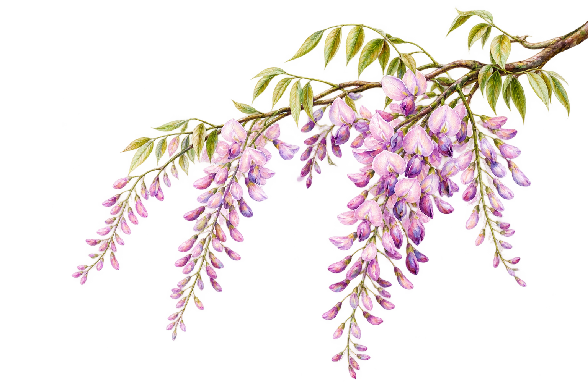
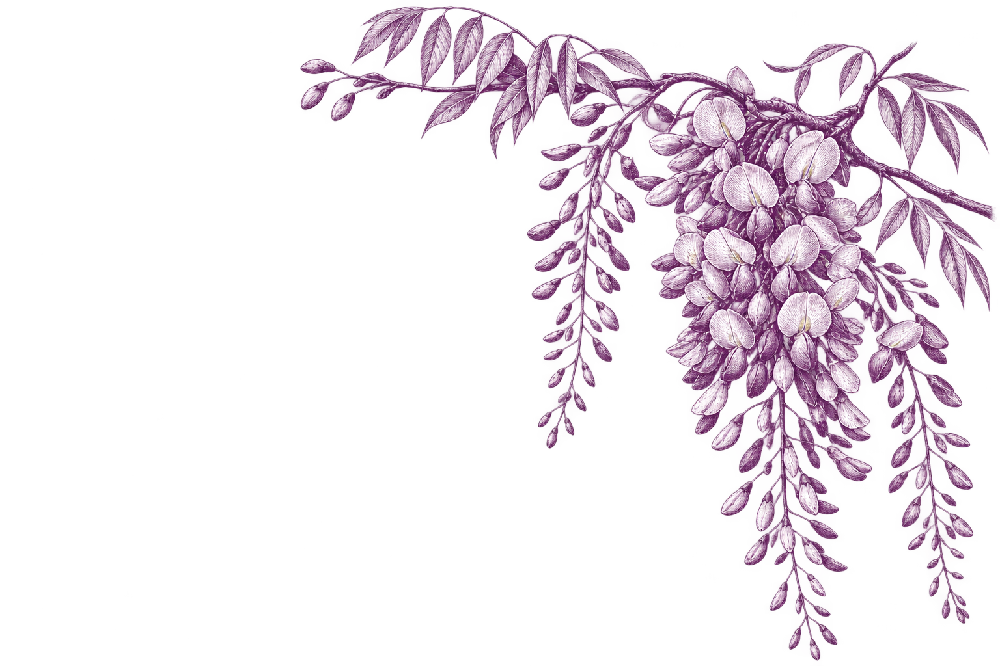
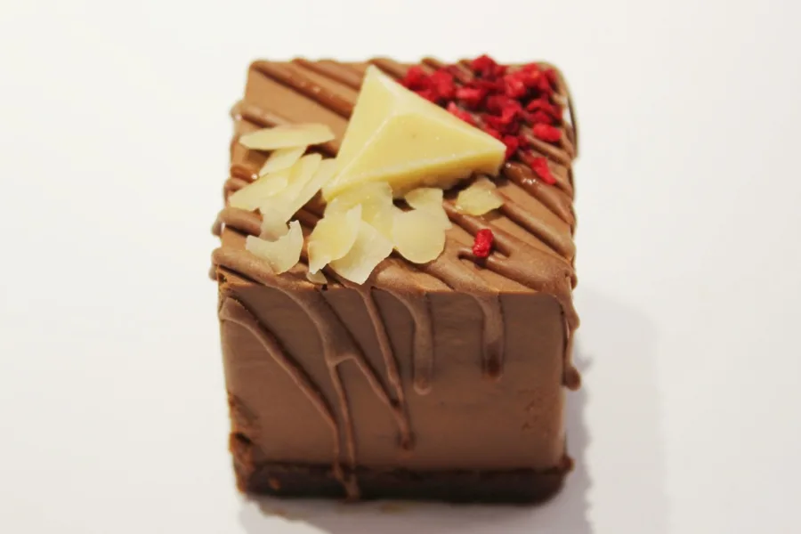
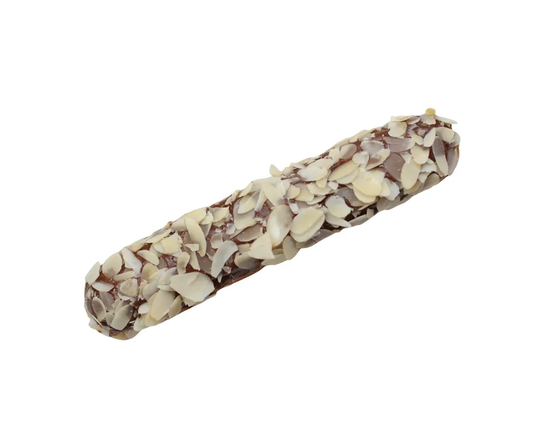
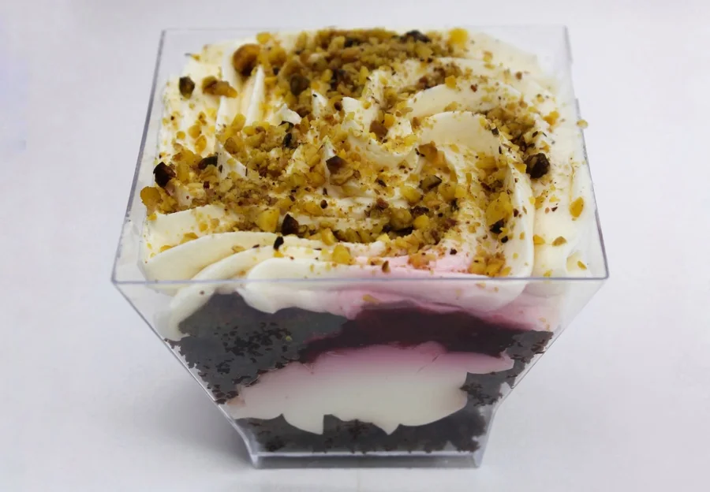

Салат с авокадо и бэби моцареллой
Ромэн, авокадо, томаты и бэби моцарелла.
По составу: Молоко
450 ₽Выбрать
Кухня Wisteria
От первого кофе до любимого десерта. Выбирайте в своём ритме.


Полный состав и доступные варианты смотрите в карточке блюда.
Ромэн, авокадо, томаты и бэби моцарелла.
По составу: Молоко


Гарнир и соус на выбор. Полный состав уточните у кафе.
Аллергены уточните у кафе · данные требуют уточнения


Традиционный эклер с сыром креметте, бельгийским шоколадом, сливками и сахарной пудрой.
По составу: Молоко

бисквит брауни (какао, яйца, сахар, мука), вишня с/м, крем(сыр креметте (творог, крахмал кукурузный, соль, вода), сливки 33%, сахарная пудра)
По составу: Молоко, Яйца
По вашему запросу ничего не найдено.